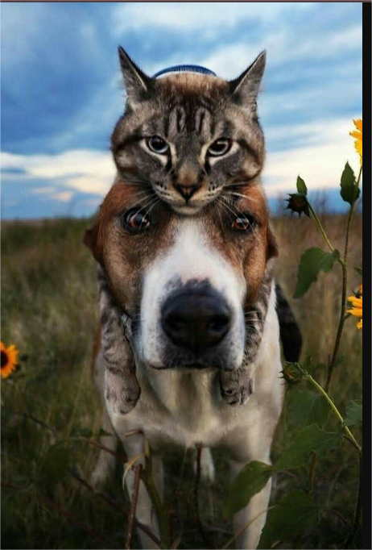
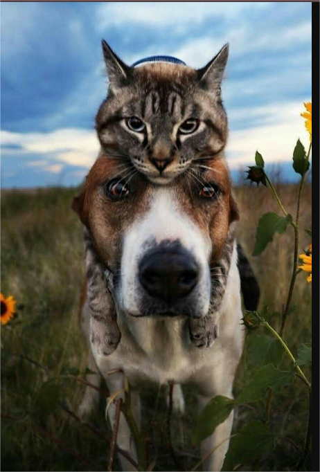

Unleash Compassion: Find Your Furry Friend with Adoptify
(1).png) 


Animals bring a unique joy and companionship to our lives. Adopting an animal is not just about
providing a home to a pet in need, but it’s also about enriching our own lives. Through adoption,
we gain a loyal friend, learn responsibility, and experience the unconditional love that animals
offer
Interacting with pets can lower cortisol levels, reducing stress and promoting
relaxation. Caring for a pet provides structure to your day and a sense of responsibility. Pets provide companionship, reduce feelings of loneliness, and can lift your mood.
By choosing to adopt, we not only give these animals a second chance, but we also gain a faithful
companion. Adoption helps reduce the number of animals in shelters and supports the fight against
animal homelessness.
It’s a meaningful gesture that promotes kindness and the well-being of our furry friends.Stress Relief
Social Interaction
Mental Health
Where to find us

TANGER

CASA BLANCA

RABAT
How to add my pet ?
Check our page
1 - Sign Up / Sign in
2- Enter your pet's infos
3- Click on "ADD" button
4- Find your homies